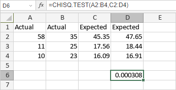

CHISQ.TEST Funkcija
Funkcija CHISQ.TEST je jedna od statističkih funkcija. Koristi se za vraćanje testa nezavisnosti, vrednosti iz hi-kvadrat (χ2) raspodele za statistiku i odgovarajućih stepeni slobode.
Sintaksa
CHISQ.TEST(actual_range, expected_range)
Funkcija CHISQ.TEST ima sledeće argumente:
| Argument | Opis |
|---|---|
| actual_range | Opseg posmatranih (stvarnih) vrednosti. |
| expected_range | Opseg očekivanih vrednosti. |
Napomene
Opsezi moraju sadržati isti broj vrednosti. Svaka od očekivanih vrednosti treba da bude veća ili jednaka 5.
Kako primeniti funkciju CHISQ.TEST.
Primeri
Slika ispod prikazuje rezultat koji vraća funkcija CHISQ.TEST.
